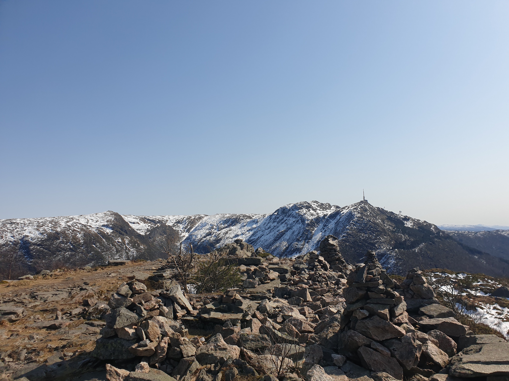

Denne uken har vært veldig spesiell for begge to... Vi fikk jobbet litt med bacheloren på mandagen, fikset ER diagram og så litt på rapporten osv. Men på tirsdag ble Alvin veldig dårlig, og Sunniva gikk og testet seg for corona. Dermed ble tirsdagen veldig redusert, arbeidsmessig.
På onsdagen hadde vi veiledning på zoom med Carsten og Paal hvor vi fikk innspill til ER diagrammet og veien videre. Resten av onsdagen var dessverre veldig stressende, da vi gikk og ventet på svar på testen. På ettermiddagen fikk Sunniva påvist korona, så da bar det videre på koronahotell. Alvin kom på hotellet på torsdagen, men resten av uken har vi følt oss ganske elendige. Dermed har det dessverre blitt lite jobbing, fordi det har vært nærmest umulig å konsentrere seg i mer enn 30 min, og vi har begge vært ganske utmattede.
Vi håper at vi blir fort friske og kan jobbe effektivt fremover!
Vi har denne uken hatt litt lite fremskritt. Vi har hatt møte med Carsten der vi diskuterte ER diagrammet, og fikk tips og tilbakemeldinger her. I tillegg har vi bestemt oss for å lage et ASP.NET prosjekt med MVC i VS etter tips fra vår foreleser i DAT154. Derfor har vi også prøvd å lese oss litt ekstra opp på det og sett litt youtube videoer.
Fra det oppdaterte ER diagrammet har vi begynt å lage et relasjonsskjema(Relational schema), for å kunne opprette databasen.
Vi har også begynt å se videre på rapporten for å ikke henge etter med den, samt begynt på OA 10 Statusrapport.
Denne uken har vi ferdigstilt skissen av programmet, slik at vi føler at vi kan begynne å kode GUIet. Vi har også hatt møte med Carsten der vi diskuterte hvor langt vi har kommet og fikk input på ER-diagram som vi skal lage.Dette har da Alvin laget. Sunniva har begynt på et data-flow-diagram.
Vi hadde også forprosjektpresentasjon som gikk bra!
Denne uken har vi fokusert mest på å få skrevet ferdig forprosjektrapporten. Dette har innebåret å få kapittel 1-3 så godt som ferdig, samt lage risikoanalyse og gantt diagram.
I tillegg har vi hatt et møte med Paal og to av sykepleierne for å få tilbakemeldinger på den oppdaterte skissen vi har laget i Figma. Her fikk vi mye bra input til hva vi skal fikse på og gjøre annerledes på skjemaet.
Stikkord fra møtet:
Vi hadde også et møte med Carsten og diskuterte ting vi lurte på angående forprosjektrapporten.
I tillegg har det vært strålende vær i Bergen og derfor har Sunniva vært på fjelltur:)
Denne uken har vi sett på skissen og gjort noen endringer her i henhold til tilbakemeldinger fra Paal.
Vi har også vært inne i Plenario og sett litt rundt og blitt mer kjent med programmet.
Fikk bekreftet at Johannes Straume er vår kontaktperson i Infodoc og sendt han en mail angående databasen. Denne har vi fått svar på, så vi kan begynne å tenke på hvordan vi skal koble data fra databasen mot vår modul.
Ellers har vi vært på metodekurs der vi gikk gjennom innlevering 7.2. Der fikk vi mange tips til hvordan vi kunne forbedre de ulike delene frem mot forprosjektrapporten. Dette har vi da også begynt med.
I tillegg har vi identifisert ulike risikofaktorer til prosjektet vårt. Disse har vi så gått gjennom med en risikomatrise for å finne ut hvilke av de det er størst risiko på.
Denne uken har det vært påskeferie, men vi har fått gjort ferdig og levert OA 7.2. Denne inneholder mye vi kan bruke videre til forrapporten, så det var fint å få den gjort ordentlig. Den inneholdt også en tentativ fremdriftsplan som vi har laget i Excel i Gantt diagram form. Ellers har Sunniva vært på hytten til sine foreldre og stått på ski og kost seg, mens Alvin har vært hjemme hos familien sin i Langesund. Nå er vi klare for fullt kjør med oppgaven!
Sunniva har levert OA 7.1. Har ogs√• prøvd √• sette meg litt inn i figma for √• se om vi kan bruke det til √• skissere et layout, pluss at jeg lagde en enkel layout. Fikk ogs√• lagt ut et blogginnlegg fra forrige uke og oppdatert to do listenüòâ ca. 3 timer.
Vi har også hatt møte med Carsten og Paal om arbeidet videre:
Vi viste den enkle skissen vi har laget i Figma, og Paal hadde noen kommentarer.
I forhold til selve kalenderen i skissen hadde han også noen kommentarer
Andre kommentarer og ideer som kom i løpet av møtet:
Vi trenger å lage et kart over systemet. Input, output og hvor ting skal lagres. Vi må få tilgang til en oversikt over hvordan databasen til infodoc er satt opp.
Paal skal prøve å mase litt på Infodoc med tanke på å få se et testsystem av Plenario.
Ellers skal vi prøve å forbedre skissen vår på FIgma, og prøve å skissere ut hvordan vi kan sette opp modulen vår.
Sunniva hadde også et kort møte med Johannes Straume fra Infodoc. Han kunne dessverre ikke svare på så veldig mye, men viste meg rundt i Plenario
Nå er begge endelig ferdig med eksamen og klare for å komme i gang med oppgaven. Vi venter enda på svar fra Endre fra Infodoc. Vi har prøvd sendt et par mailer og prøvd å ringe, men har fått beskjed om at han er ganske opptatt. Frem til han får satt opp et testsystem for oss får vi prøve å skissere ut hvordan modulen vi skal lage skal se ut.
Vi har hatt et møte med Carsten hvor vi diskuterte hva vi skal gjøre nå frem til påsken. Det innebærer å levere de to oppgavene med mål og metode, og dermed komme et stykke på forrapporten, samt skissere designet.
Neste uke skal vi ha et møte med Paal og Carsten.
Fortsatt lockdown og hjemmekontor </3
Forrige uke ble det ikke så mye arbeid grunnet innlevering i DAT154. Denne uken er det jo full nedstengning i Bergen, noe som gjør samarbeid litt ekstra utfordrende. Det er ingen steder vi kan møtes og jobbe, og begge begynner å bli ganske lei zoom. Håper lockdownen bare varer til søndag..
Vi har begynt å se litt på rapportmalen og hva som skal være med på den. Begynt smått å skrive litt på innledning og prosjektbeskrivelse. Vi venter stadig på mail fra Endre fra InfoDoc, så tenker å sende en mail til i løpet av uken.
27. januar, på Zoom
Alvin, Sunniva, Paal Nygaard og Carsten Gunnar Helgesen
Antall timer: 0.5
Arbeidsplass og utstyr
Vi jobber på skolen i hovedsak. Trenger ikke noe ekstra utstyr, annet enn tilgang til en testversion/testmodul av systemet fra Infodoc som vi kan jobbe med.
Kontaktpersoner hos oppdragsgiver, med kontakt-info
Paal Nygaard. TLF: 90756995
Eierforhold til resultatet
Om vi det vi lager fungerer bra og kan brukes, tenker vi at Infodoc og Gatehospitalet kan ta eierskap av det om det er ønskelig.
Konfidensialitetshensyn
Så lenge vi ikke snakker om ekte pasienter og om personopplysninger trengs ikke det.
Møtefrekvens
Ikke så mye nå før mars. Men senere bør det bli hyppigere møter. 
Frem til neste møte/etter eksamen
Lage skisser, enkle prototyper for å se enkle måter vi kan løse det på. Før vi begynner å programmere.
Sende en mail til Endre i Infodoc og prøve å få tilgang på testmodul.
Prøver å få til møte på Zoom med Carsten innen en uke eller to.
Om vi trenger noe fra Paal eller andre i Gatehospitalet elle Infodoc før eksamen i uke 10, sender vi dem en mail eller ringer.
Vi satser på å planlegge møte med de når uke 10 nærmer seg.
Referat 12. januar:
Tilstede: Alvin, Sunniva, Paal Nygaard og Arve Bang.
Antall timer: 5
Vi ble hentet og kjørt ut til Gatehospitalet som ligger i Arna. Der fikk vi først en liten omvisning av stedet og fikk hilst på de ansatte. Deretter gikk vi gjennom programmet de bruker fra før, og hva som ikke fungerer med den nåværende løsningen. Vi så hvordan sykepleierne delte ut og registrerte medisiner i dag, som de gjør for hånd på et ark. Videre ble vi servert lunsj. Etter lunsj hadde vi et møte med Infodoc som leverer systemet de har i dag, kalt Plenario. Der fikk vi litt info om programmet og hva vi bør tenke på. Vi fikk og vite at vi vil få en testserver som vi kan jobbe med når vi utvikler vår løsning.
Løsningene sykepleiere har nå blir fort veldig rotete da medisiner seponeres og legges til flere ganger. Arket blir fort fullt og uoversiktlig og feil kan oppstå. Derfor ønsker de seg en digital løsning der de kan gjøre klar dosettene og signere på dette, samt registrere at medisinene er delt ut.
En av de største utfordringene tror vi blir å håndtere personopplysninger riktig og i samsvar med loven. Derfor må vi være veldig obs på dette når vi utvikler løsningen vår. Det er ingen mulighet å kommunisere ut info, men vi kan hente info ut fra journalen. Vi bør ikke hente ut info med et program og sende ut til et annet fordi da kan det oppstå problemer med kryptering og sikkerheten. Rettighetene som brukeren har er på nivå 4, som vil si BankID.
Alt i alt var det et bra møte med mye info. Oppdragsgiver og Infodoc virker veldig behjelpelige. Vår største utfordring kommer nok til å bli at dataene er såpass lukket. Dette er noe vi må diskutere videre med InfoDoc.